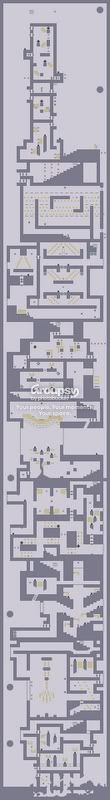

my submission is kinda lame, but i guess that's because i didnt really grasp the whole idea of this contest. i do now though
i win the "longest most annoying name ever" award 
wow, i didn't expect that.
i choose.....
In The Alps! i like the whole mountain / climbing theme.
EDIT: cheesegod is judging?
i choose.....
In The Alps! i like the whole mountain / climbing theme.
EDIT: cheesegod is judging?
i agree with moshpit.
i have to say, that smiley face at the end of Priority Mail ruined my day.
i dont really have a specific enemy, i try to use em all. but of all of them, i like chainguns the best.
http://numa.notdot.net/map/25260
Enough said.
the comments and description of that map have to be the funniest things i have ever, ever seen.
more funny maps:
THLDDA
Oh gud cod the spikyness
EDIT: This is the most funny map, EVER. i can't stop laughing when i read the description. yes, i read all of it. it's awesome
LOTS OF CAPS LOCK IN HERE
the comments are hilarious as well
Your Powers are weak old man... in my pants (Star wars breakbeats)
Wonderful night in my pants (fatboy slim)
Dinosaur Act in my pants (matthew sweet)
Scorpion frog in my pants (infected mushroom)
The Ugly Truth in my pants (matthew sweet)
it keeps going in my pants!!!!
Wonderful night in my pants (fatboy slim)
Dinosaur Act in my pants (matthew sweet)
Scorpion frog in my pants (infected mushroom)
The Ugly Truth in my pants (matthew sweet)
it keeps going in my pants!!!!
cant beat legacy
cant beat N
80 something place
only 17 of my 94 maps have more than 5 votes.
am i good or what
cant beat N
80 something place
only 17 of my 94 maps have more than 5 votes.
am i good or what
i use the puke green one. green's my color. but not puke. that was an accident 
i made one, but NUMA is down or something. will submit lat0r
uh, sorry to double post but
Choke Well.
theres another one. they keep coming
hey look at my avatar. they Tea bag in unison!
Choke Well.
theres another one. they keep coming
hey look at my avatar. they Tea bag in unison!
here's a third.
Brave The Coming Tide
I'm all hopped up from snorting bounceblocks now. damn that hooligan yahoozy!
Brave The Coming Tide
I'm all hopped up from snorting bounceblocks now. damn that hooligan yahoozy!
k... im somewhat of a tech noob....
i have a mac. osX.
i have firefox, but when i download the chatzilla thing it is downloaded as a .xpi file, and i can't open it for some reason. says it doesnt know what application to open it with.
Apologies if someone has already asked this, but what do i do?
i have a mac. osX.
i have firefox, but when i download the chatzilla thing it is downloaded as a .xpi file, and i can't open it for some reason. says it doesnt know what application to open it with.
Apologies if someone has already asked this, but what do i do?
my steps:
I choose a combo of enemies.
I make a interesting tileset.
I slap the combo of enemies in there, most times just completely randomly.
I test the level a little to see if they work.
after about 15 minutes of putting in and taking out stuff its to the point where i can polish. A lot of my maps are hit - or - miss type deals
I choose a combo of enemies.
I make a interesting tileset.
I slap the combo of enemies in there, most times just completely randomly.
I test the level a little to see if they work.
after about 15 minutes of putting in and taking out stuff its to the point where i can polish. A lot of my maps are hit - or - miss type deals
awww, thanks yahoozy
but seriously, your maps have been awesome recently. It's a shame they don't get any recognition.
but seriously, your maps have been awesome recently. It's a shame they don't get any recognition.
i'm going to focus on the stuff I hate more than I like.
call me mr. negative.
i like:
-interesting and cool tilesets. this usually is what gets me into a map.
i don't like:
-long stupid tunnels full of nothing. you've seen them, practically everyone makes a map like that in their career.
-z snap anything.
-maps that are just made into big boring rooms by E tiles. use something else!
-excessive use of one type of enemy or object
call me mr. negative.
i like:
-interesting and cool tilesets. this usually is what gets me into a map.
i don't like:
-long stupid tunnels full of nothing. you've seen them, practically everyone makes a map like that in their career.
-z snap anything.
-maps that are just made into big boring rooms by E tiles. use something else!
-excessive use of one type of enemy or object
drones that shot a flamethrower at close range whenever you go near. they would move a little faster than the normal blue ones, and be red for obvious reasons
Grizzly bear! It would mostly just be like the floorguards, except slower, plus it would be animated like a grizzly bear!
excellent.

Bees. you'd touch the nest and then theyd run you down
ok, i'm a big fan of daft punk and all, but their new video for Technologic is scary
really scary O_O
the little robot boy thing strikes a chord deep down in my soul, one of the primal fears and horrors of the unknown.
it's like the terminator, too.
check it out: Technologic
really scary O_O
the little robot boy thing strikes a chord deep down in my soul, one of the primal fears and horrors of the unknown.
it's like the terminator, too.
check it out: Technologic
i'd have to say either:
VV33, because his tiles that are somehow chaotic and unified at the same time
or
krusch, because his maps are really stylized and cool.
VV33, because his tiles that are somehow chaotic and unified at the same time
or
krusch, because his maps are really stylized and cool.
right as i really start enjoying numa...
my favorite authors start leaving.
good luck and come back and visit
my favorite authors start leaving.
good luck and come back and visit
i hope this judging doesn't drag on for evAr. like some people's contests i know...coughmcpcough
jokes...
jokes...
i suggest you put it up on www.fanfiction.net
mind you, registering and making an account there is kinda aggravating, and not many people will read it, but...
actually, don't put it there. not really worth it
mind you, registering and making an account there is kinda aggravating, and not many people will read it, but...
actually, don't put it there. not really worth it
So i walked into a bar the other day...
should've ducked.
should've ducked.
I saw these anime Powerpuff Girls on a website once.
They were awesome and attractive.
rofflemayohlawl.
this yours?
i chose the first non metanet link. pretty interesting
lol
i chose the first non metanet link. pretty interesting
lol
QuoteRincewind SW --
[noun]:
A master blogger
i would have to cut off my hands like red_reamer in order to stop.
but i never will! ahahahahah!
but i never will! ahahahahah!
i just think it's scary because whenever it shows his face my eyes get drawn to his teeth. and pink gums. and that is what makes me shiver
that and around the world are really cool/wierd/thing vids.
@ gangsta-skorp:
yeah, it's repetitive. that's part of what daft punk is robot rock is the most repetitive song i have ever heard.
robot rock is the most repetitive song i have ever heard.
edited sos i spel gud.
that and around the world are really cool/wierd/thing vids.
@ gangsta-skorp:
yeah, it's repetitive. that's part of what daft punk is
robot rock is the most repetitive song i have ever heard.edited sos i spel gud.
*sheds a tear*
i think it'd be cool, but only like 3 or 4 members would ever use it
i think it'd be cool, but only like 3 or 4 members would ever use it
it's fun. and by that, i mean really, really fun.
buy it and watch all your free time sink into oblivion. i'm not even kidding.
However, all that famed "casual gaming" in WoW is faked junk. once you get into the game, the only fun things you can do require enourmous chunks of your time.
to quote my friend,
thankfully, N came along and (kind of) saved me from one addtictive game, and threw me straight into another
buy it and watch all your free time sink into oblivion. i'm not even kidding.
However, all that famed "casual gaming" in WoW is faked junk. once you get into the game, the only fun things you can do require enourmous chunks of your time.
to quote my friend,
QuoteI love WoW. it's pretty much my life after homework each day.
thankfully, N came along and (kind of) saved me from one addtictive game, and threw me straight into another
make banners for 1st and second place?
i dunno, just throwing up suggestions
i dunno, just throwing up suggestions
i use K for jump ( A is left and D is right )
been playing FPS too long to use anything other than WSAD position :[
been playing FPS too long to use anything other than WSAD position :[
Welcome, folks, to the Thousand Stories Tournament! This is my first tourney post here, so i hope it'll go over alright
TABLE OF CONTENTS:
1. Overview
2. Rules
3. Tiles, Items and more!
4. Participants
5. Judges
6. Prizes, etc.
Alright, here's the deal. Long rambling follows.
1. Overview
My general idea for this was to take a series of maps like The Epic and make it into a tournament, where the authors of the individual levels compete against each other. This might result in chaos, but i decided to give it a shot anyway.
In The Thousand Stories, 5 authors will create a series of 5 maps. Like The Epic, they must flow together and create a coherent storyline.
After these authors create the series, their maps will be judged according to normal judging guidlines. The Winner of the series may then create a NEW series, starting with his map, and 4 more authors will sign up to create maps in that series. This is repeated for however long the winners want to keep creating maps. If a winner does NOT want to create a map, the 2nd place author will.
You may also sign up to be a judge for ONE series. If you do so, you are guaranteed a spot in the next series ( you may choose wich one you want )
2. Rules
The Tileset must have a terrain-like feel. Hills, Cliffs,Mountains, Caves, Spaceships, Waterfalls, Oceans, etc are acceptable.
Just like The Epic, the maps in the series must have tilesets that flow together.
The First Map in a series MUST have exits on the LEFT wall AND the right wall, so that the author making the SECOND MAP in a series can have a choice to either continue the series going RIGHT or LEFT
When Making a Map, be sure to start your ninja in the exact square (Or VERY close to) that the exit was located in the previous map.
You can pretty much do anything you want with the story and tileset, just make sure they flow together! be creative!
3. Items
As stated in chapter 2, the tileset can be any kind of terrain at all, as long as you keep it flowing with the previous map in the series. Please, use appropriate items in your map. I want these maps to look nice, so please no nooby behavior.
4. Participants
5 authors will participate in ONE series.
I'll start the first one off, as an example.
THE FIRST STORY:
|------Story 1-----|
author 1: PALEMOON Tranquility Spring
author 2: Valiantninja The Wine Cellar
author 3: ZIVILYNBANE
author 4: Limer
author 5: Demonzlunchbreak
WINNER: ( none decided )
Judge For Story 1: Topolord!
This format continues for each subsequent series
5. Judges
You may judge for one series of 5 maps. Please judge! if you do, you can automatically take a spot ( whatever one you want EXCEPT THE FIRST ) in the next series of maps. 'nuff said.
6. Prizes?
1st, 2nd, 3rd place banners maybe? ( I suck at photoshop )
You get to create the next series however you want
and, of course, fame and fortune. and hot babes, though i cannot completely guarantee this.
If you have any questions, do not hesitate to ask. I know i don't really explain things clearly, so ask if something seems opaque.
If you sign up for a series, please specify wich spot you want. you may sign up by posting below.
have fun!
OMFG A SMILEY
TABLE OF CONTENTS:
1. Overview
2. Rules
3. Tiles, Items and more!
4. Participants
5. Judges
6. Prizes, etc.
Alright, here's the deal. Long rambling follows.
1. Overview
My general idea for this was to take a series of maps like The Epic and make it into a tournament, where the authors of the individual levels compete against each other. This might result in chaos, but i decided to give it a shot anyway.
In The Thousand Stories, 5 authors will create a series of 5 maps. Like The Epic, they must flow together and create a coherent storyline.
After these authors create the series, their maps will be judged according to normal judging guidlines. The Winner of the series may then create a NEW series, starting with his map, and 4 more authors will sign up to create maps in that series. This is repeated for however long the winners want to keep creating maps. If a winner does NOT want to create a map, the 2nd place author will.
You may also sign up to be a judge for ONE series. If you do so, you are guaranteed a spot in the next series ( you may choose wich one you want )
2. Rules
The Tileset must have a terrain-like feel. Hills, Cliffs,Mountains, Caves, Spaceships, Waterfalls, Oceans, etc are acceptable.
Just like The Epic, the maps in the series must have tilesets that flow together.
The First Map in a series MUST have exits on the LEFT wall AND the right wall, so that the author making the SECOND MAP in a series can have a choice to either continue the series going RIGHT or LEFT
When Making a Map, be sure to start your ninja in the exact square (Or VERY close to) that the exit was located in the previous map.
You can pretty much do anything you want with the story and tileset, just make sure they flow together! be creative!
3. Items
As stated in chapter 2, the tileset can be any kind of terrain at all, as long as you keep it flowing with the previous map in the series. Please, use appropriate items in your map. I want these maps to look nice, so please no nooby behavior.
4. Participants
5 authors will participate in ONE series.
I'll start the first one off, as an example.
THE FIRST STORY:
|------Story 1-----|
author 1: PALEMOON Tranquility Spring
author 2: Valiantninja The Wine Cellar
author 3: ZIVILYNBANE
author 4: Limer
author 5: Demonzlunchbreak
WINNER: ( none decided )
Judge For Story 1: Topolord!
This format continues for each subsequent series
5. Judges
You may judge for one series of 5 maps. Please judge! if you do, you can automatically take a spot ( whatever one you want EXCEPT THE FIRST ) in the next series of maps. 'nuff said.
6. Prizes?
1st, 2nd, 3rd place banners maybe? ( I suck at photoshop )
You get to create the next series however you want
and, of course, fame and fortune. and hot babes, though i cannot completely guarantee this.
If you have any questions, do not hesitate to ask. I know i don't really explain things clearly, so ask if something seems opaque.
If you sign up for a series, please specify wich spot you want. you may sign up by posting below.
have fun!
OMFG A SMILEYI won't worry about a deadline for the maps until all 5 spots are full.
no specific story.... just make it flow with the previous ones, is all i ask
Ok guys, the first story is of at this moment, OPEN!
List Of Participants <----
1. Palemoon
2.Valiantninja
3.ZivilynBane
4.Limer
5. Demonzlunchbreak
JUDGE: Topolord.
Just submit them when you're done, i'll punch them into the list.
List Of Participants <----
1. Palemoon
2.Valiantninja
3.ZivilynBane
4.Limer
5. Demonzlunchbreak
JUDGE: Topolord.
Just submit them when you're done, i'll punch them into the list.
[Link removed cause i'm stupid.]
damn! really!
raragrara. reading is hard for me today. changing it
raragrara. reading is hard for me today. changing it
sounds like a good idea demonz. if he hasnt responded by tomorrow ctb can join!
oh god....
i trudged way back to when i first joined numa.
hideous....
my first map isnt bad, but the next like 5 suck.
oh god, theyre terrible
[Edit]
the maps have other text spaced weirdly before and after them. just ignore it and copy the good map data
i trudged way back to when i first joined numa.
hideous....
my first map isnt bad, but the next like 5 suck.
oh god, theyre terrible
[Edit]
the maps have other text spaced weirdly before and after them. just ignore it and copy the good map data
hehe, don't worry about it.
alright, Zivilynbane is up. he's my irl friend, so i'll contact him today.
alright, Zivilynbane is up. he's my irl friend, so i'll contact him today.
Can i use unlimited gold peices?
a massive amount of Vehemence. Seriously, like a pantload. I've nearly beaten them all, now!
N never slows or crashes my Mac.
Lucky me
QFT
Good work, DD!
*Plays*
*Plays*
is it too late to sign up?
if not, i'm in.
if not, i'm in.
Freshly Squeezed. A Murder Of Crows
Pitch: Maps have either very simple or very complex tilesets and ways of completion. His use of objects tends to be the same way. All are very fun and enoyable.
55674
n00b level maker. or at least everyone thinks so.
help. sign me up with a veteran, i obviously don't know what im doing.
" You're in the sunday N! you must be good! i rate 5 k! "
it's really slow. someone change it now because i'm about to die. seriously. DIE.
two failed, one testing
one thing i disliked was the profusion of " Jump over floorguards / Seeker Drones " maps. I know it's kind of unavoidable, what with the sheer amount of unique maps, but they got a little tiring.
halp.
Keep them the same. You can dodge chainguns in real life, however slim the possibility may be. And the randomness adds to the "gun" effect.
QFT
yay, a massive tie for 2nd
Brttrx.
lol no palemoon you silly kid.
Brttrx.
Brttrx.
dying.
It's fine with me, as long as it looks good. you can get away with anything as long as it's flashy.
I don't get it. NaN'd chainguns and lasers count as non-active, but guasses and rockets don't?
i dunno. i just went with the classic mine + gold to avoid confusion
ahh! since i can't log in, my map archive is piling up! if it gets too big, MY COMPUTER WILL EXPLODE.
i KNEW i should have clicked that 'remember me' thing. oh well. * goes off to compulsively create maps, only to find out they can't be shared *
T_T
T_T
7
like, 1. maybe 2.
bitesize: another way for popular authors to become more popular
ZivilynBane: WHY DO ELEPHANTS WEAR PURPLE NAIL POLISH???
PalemoON: uh.
ZivilynBane: TO HIDE IN GRAPE TREES!
PalemoON: but.. they don't HIDE in grape trees.
ZivilynBane: See, that's because the nail polish is working.
PalemoON: .
PalemoON: ..
PalemoON: ...
PalemoON: uh.
ZivilynBane: TO HIDE IN GRAPE TREES!
PalemoON: but.. they don't HIDE in grape trees.
ZivilynBane: See, that's because the nail polish is working.
PalemoON: .
PalemoON: ..
PalemoON: ...
nevermind. sorry, i overextended myself on things i need to do 
Monolithitech
Yeah, so since i can't log into NUMA i've been going into withdrawal. To cope, i've been attempting to make a pack of levels.
This one is very short ( 7 levels ).
nevertheless, please enjoy. or something.
This one is very short ( 7 levels ).
nevertheless, please enjoy. or something.
my bad. fixed, i think
...put .txt at the end of the file to change it. Or right click...new....text document...or... download.... the tiny..... word... docu....ment......
and yeah, i do make maps fast.
eh. NUMA is the place for my maps
quick, how do i created userlevels.
right: D
left: A
jump: N
left: A
jump: N
totally anything techno. i have all the effects for N turned all the way down.
favorites would be digitalism or daft punk
favorites would be digitalism or daft punk
reminds me of WoW. the Defias thing. love the background, but your name doesn't stand out. 8.5/10
, or spelling, obviously, so i
Eli
The Pristine Tower looms above the countryside: The upper tiers of the cyclopean structure are shrouded in clouds. Approaching it, the black-gray granite of the walls seem to tower over you, daring you to come any closer. You do so anyway, your black cloth-wrapped feet sliding noiselessly over the rubble and debris at the bottom of the tower. A gaping hole in the side seems to be the only point of entry -- the rest of the tower is sheer granite. You stealthily sneak into the tower, and in your head you remember the stories of the endless power, fame, knowledge and fortune that are rumored to rest in the Tower....
Your footfalls disturb the untouched dust of centuries here-- A thick layer of dust covers everything! Looking closer under the patina of filth, however, you see the glint of something of far more worth.... You find yourself in a grand antechamber of sorts, complete with old, scarred wooden furniture. A massive chandelier, draped in gold ornamenting dangles from the chamber's vaulted cieling, just a hint of the tower's incredible wealth. Progressing further, you encounter several rooms with absolutely nothing at all-- just the walls, and dust.
After making your way through the Atrium, you come upon a shaft of sunlight, the rays peircing deep into the Tower by way of a skylight, way above. All around you are stairs, lined with pictures and portraits made unsettling and eerie because of the thick layer of dust and grime on them. The stairs appear to have no point, leading into windows to the outside, to walls, to nowhere. Eventually you come upon a quiet balcony, a far cry from the oppressive and gloomy inside of the Pristine Tower. The red rays of the evening sunlight bathe you, and you decide to take a moment to enjoy it before it plunges below the mountains in the distance.
After silently slipping through the balcony and stair rooms, you find yourself in a series of long tunnels or corridors, devoid of windows, doors, or even pictures adorning the walls. Examining your position, you realize that automatons made entirely out of gears, wires, springs and cogs are slowly tick-ticking their way towards your position, their arcane inner workings squealing and groaning as they load fresh magizines into long-unused machine guns. Thinking quickly, you flicker past streams of chaingun fire and find yourself in what seems to be the guest quarters of the Tower. You continue on, delving deeper into the secrets of the Tower.
The last rays of the dying sun filter through massive glass windows here, dying the entirety of this chamber in a blood-red glow. Bizarrely, a large withered tree grows here, still bearing all of its green leaves. The contrast between the green, healthy tree and the lifeless and sterilized grey granite startles you. High above, a kind of long-disused wooden bridge suspends over the large chamber you're in, threatening to fall at any moment. As you enter the second balcony, you stop just in time to see the sun plunge below the mountain range. The rest of your ascent will have to be in the dark.
Night falls on Pristine Tower, and with it does an oppressive and unsettling sense of being watched. As you step into another dimly lit passage, your ultra-receptive hearing picks up on something soft, faint, and lilting.... music? Could it be music? Whatever it is, it's both horrifying and strangely beautiful at the same time. Why couldn't you just sit and listen for a while? No harm in that.....
Suddenly, you snap into conciousness again. You have no idea how much time has passed, and for a moment, panic and claustrophobia sweep over you as you finally realize where you are. Blocking out the music, you haphazardly stumble through corridor after corridor until you pass through a glass window into the open air. The cool night air snaps you back to your senses, and you strengthen your resolve to climb to the top of the tower. You continue on.
Now, a you climb the Tower in the darkness of night, you progress slower, carefully choosing each step, silently calculating the path easiest to travel. Climbing up yet another set of lifeless stairs, something catches your eye, taking you unaware-- the yellowish tint of gold! Painfully aware of your slowing metabolism, even the smallest treasure trove of gold like this one makes you long for the happy bliss of the energy it provides. Unthinking in your hunger, you mistakenly press one black-clad foot onto a pressure plate in the floor. Instantly, heavy iron doors smash down to impede your progress!
Behind you you hear the whirring and clicking of ancient gears and cogs. You turn to see in the dim light three red orbs swing out on pivots attached to the walls. Their red targeting-eye glares malevolently in the darkness of the Tower, and their armor plating unfolds to reveal a missle rack, packed full of armed rockets hungry for ninja flesh. You frantically outrun them, and find yourself in the middle of a dusty library-- no doubt one mentioned in the legends you've heard about.
The darkness of the tower is dispelled by a birght light ahead of you. As you approach, you realize it is from thousands of candles strung around the entirety of this chamber, draped on balconies, fixed to walls, hung from the ceilings, and some fixed in the air like stars. Tired, dusty-sounding music fills the air, a tinny waltz coming from a player piano, stil grinding out the same tune for tens ( if not hundreds ) of years. As you step inside, the music intensifies, and at the same instant rocket-turrets extend out of ornate divots in the walls. Lights flash across your vision, and you find yourself dancing through the air, dodging and twisting in your own waltz of death with rocket-propelled partners.
Eventually a bell tolls, somwhere. You realize it as midnight, and at that instant the candles snuff out, the rockets fall dead, and the turrets retract back into their homes. Darkness steals across the tower once again. You continue to a massive stairway, littered with barbs and spikes, and some unknowing feeling tells you that this ordeal is nearly over.
The barb - strewn stairway leads, ultimately, onto a large granite block of stone, the final balcony of the tower. The view is not grandiose or breathtaking, but dark, grim, and forboding. A full, pale moon dominates the sky, daring you to continue on your quest. A final, slim spire extends out of the balcony, continuing up farther into this endless tower to no doubt the top and where you, the ninja, will acheive all of your life's desires.
No wind blows despite the clouds rapidly moving past and around you, and no sound reaches your acute ears. As you stand and examine the balcony, though, red lights flicker on from high above in the shadow of a spire parapet. You notice just in time, and manage to evade a hot-shot bullet from what is obviously some sort of sharpshooter machine. Following after the bullet is a chaser of two more rockets, afterburners tracing lines of orange in the darkness. They hiss and whizz towards you, and high above the sharpshooter device loads another massive heavy calibur slug into the barrel of a rifle.
The forces of the tower seem to conspire against you: more machines, caked in dust and groaning in complaint as they activate, come out of special holding chambers, all of them blazing their ornate and arcane chain guns at a small, darting black figure frantically hiding behind chunks of stone, parts of walls long since knocked down, and doors swiftly eaten away by a hail of specially sanctified ammunition, lain dormant for centuries inside forgotten god-machines.
Your mind quickens and you reach the top, visions of wealth, power and knowledge flit past your eyes, and time seems to slow down: you can see the bullets chewing at the air as they whiz past you, you can taste the air of the tower outside, you can feel the light of the moon beating down on you, more intense than any flame, you can hear the sound of the granite floor as your swift footfalls impact the cold material:
and then in the blink of an eye you're outside, standing on the top of a god-forsaken spire in the middle of nowhere, and there is nothing, absolutely nothing, waiting for you at the top of the tower and the moon seems to laugh at you, and the stone grows warm and uncomfortable, and you fall to your knees in digust, in disappointment, and above all, a crushing feeling of suffocation, the overwhelming idea that you FAILED, you failed in your pursuit of knowledge, you failed in your pursuit of everything, and you'll die up on the top of a needle of rock, laid upon a vast ball of mud spinning through infinite space like some speck of dust in the blink of a child's eye.
You lay there for what seems like eternities: you convince yourself you can look up at the moon and see the end of man, the end of the world, the end of ninjas, the end of EVERYTHING, and then suddenly you hear the whirring and clicking of those infernal machines, the undying guardians of the edifice known as the Pristine Tower. They're coming for you, endlessly coming for you, for you are the aggressor here, you are the attacker, you are the intruder, and, ultimately, you will die like everyone else that's ever been lured here.
As you stare into the barrel of a smoking-hot chain gun, you realize just why the tower has this name... You look over the edge of the top of the tower, and you can see everything. Everything, laid out before you like a book. You take a look, and then you see all the power, all the knowledge, all the wealth you could ever imagine, all seen from the top of this cyclopean tower.
The world, serene in nighttime.
It doesn't matter at all, you realize. You've already attained everything you could hope for, and you are wealthy beyond any mortal imagining. Your life was worth this moment, not two, not three, just one, one look to gaze into the true reason of existence and know, for a fact, what you're there for.
You turn your back to the gun-drone with a smile on your face...
And jump.
Act I is finished! I hope you enjoyed it!
Enjoy!
I
Ruined Entryway // Meditation Halls
II
Grand Atrium // Dusty Tombs
III
Stair Room // Lower Balcony
IV
Clockwork Corridors // Guest Quarters
V
Arboretum // Upper Balcony
VI
Ghost Way // King's Cloister
VII
Sliding Door Room // Library
VIII
Ballroom // Omega Stair
IX
Final Balcony // Spire Spiral
X
Apotheosis
Your footfalls disturb the untouched dust of centuries here-- A thick layer of dust covers everything! Looking closer under the patina of filth, however, you see the glint of something of far more worth.... You find yourself in a grand antechamber of sorts, complete with old, scarred wooden furniture. A massive chandelier, draped in gold ornamenting dangles from the chamber's vaulted cieling, just a hint of the tower's incredible wealth. Progressing further, you encounter several rooms with absolutely nothing at all-- just the walls, and dust.
After making your way through the Atrium, you come upon a shaft of sunlight, the rays peircing deep into the Tower by way of a skylight, way above. All around you are stairs, lined with pictures and portraits made unsettling and eerie because of the thick layer of dust and grime on them. The stairs appear to have no point, leading into windows to the outside, to walls, to nowhere. Eventually you come upon a quiet balcony, a far cry from the oppressive and gloomy inside of the Pristine Tower. The red rays of the evening sunlight bathe you, and you decide to take a moment to enjoy it before it plunges below the mountains in the distance.
After silently slipping through the balcony and stair rooms, you find yourself in a series of long tunnels or corridors, devoid of windows, doors, or even pictures adorning the walls. Examining your position, you realize that automatons made entirely out of gears, wires, springs and cogs are slowly tick-ticking their way towards your position, their arcane inner workings squealing and groaning as they load fresh magizines into long-unused machine guns. Thinking quickly, you flicker past streams of chaingun fire and find yourself in what seems to be the guest quarters of the Tower. You continue on, delving deeper into the secrets of the Tower.
The last rays of the dying sun filter through massive glass windows here, dying the entirety of this chamber in a blood-red glow. Bizarrely, a large withered tree grows here, still bearing all of its green leaves. The contrast between the green, healthy tree and the lifeless and sterilized grey granite startles you. High above, a kind of long-disused wooden bridge suspends over the large chamber you're in, threatening to fall at any moment. As you enter the second balcony, you stop just in time to see the sun plunge below the mountain range. The rest of your ascent will have to be in the dark.
Night falls on Pristine Tower, and with it does an oppressive and unsettling sense of being watched. As you step into another dimly lit passage, your ultra-receptive hearing picks up on something soft, faint, and lilting.... music? Could it be music? Whatever it is, it's both horrifying and strangely beautiful at the same time. Why couldn't you just sit and listen for a while? No harm in that.....
Suddenly, you snap into conciousness again. You have no idea how much time has passed, and for a moment, panic and claustrophobia sweep over you as you finally realize where you are. Blocking out the music, you haphazardly stumble through corridor after corridor until you pass through a glass window into the open air. The cool night air snaps you back to your senses, and you strengthen your resolve to climb to the top of the tower. You continue on.
Now, a you climb the Tower in the darkness of night, you progress slower, carefully choosing each step, silently calculating the path easiest to travel. Climbing up yet another set of lifeless stairs, something catches your eye, taking you unaware-- the yellowish tint of gold! Painfully aware of your slowing metabolism, even the smallest treasure trove of gold like this one makes you long for the happy bliss of the energy it provides. Unthinking in your hunger, you mistakenly press one black-clad foot onto a pressure plate in the floor. Instantly, heavy iron doors smash down to impede your progress!
Behind you you hear the whirring and clicking of ancient gears and cogs. You turn to see in the dim light three red orbs swing out on pivots attached to the walls. Their red targeting-eye glares malevolently in the darkness of the Tower, and their armor plating unfolds to reveal a missle rack, packed full of armed rockets hungry for ninja flesh. You frantically outrun them, and find yourself in the middle of a dusty library-- no doubt one mentioned in the legends you've heard about.
The darkness of the tower is dispelled by a birght light ahead of you. As you approach, you realize it is from thousands of candles strung around the entirety of this chamber, draped on balconies, fixed to walls, hung from the ceilings, and some fixed in the air like stars. Tired, dusty-sounding music fills the air, a tinny waltz coming from a player piano, stil grinding out the same tune for tens ( if not hundreds ) of years. As you step inside, the music intensifies, and at the same instant rocket-turrets extend out of ornate divots in the walls. Lights flash across your vision, and you find yourself dancing through the air, dodging and twisting in your own waltz of death with rocket-propelled partners.
Eventually a bell tolls, somwhere. You realize it as midnight, and at that instant the candles snuff out, the rockets fall dead, and the turrets retract back into their homes. Darkness steals across the tower once again. You continue to a massive stairway, littered with barbs and spikes, and some unknowing feeling tells you that this ordeal is nearly over.
The barb - strewn stairway leads, ultimately, onto a large granite block of stone, the final balcony of the tower. The view is not grandiose or breathtaking, but dark, grim, and forboding. A full, pale moon dominates the sky, daring you to continue on your quest. A final, slim spire extends out of the balcony, continuing up farther into this endless tower to no doubt the top and where you, the ninja, will acheive all of your life's desires.
No wind blows despite the clouds rapidly moving past and around you, and no sound reaches your acute ears. As you stand and examine the balcony, though, red lights flicker on from high above in the shadow of a spire parapet. You notice just in time, and manage to evade a hot-shot bullet from what is obviously some sort of sharpshooter machine. Following after the bullet is a chaser of two more rockets, afterburners tracing lines of orange in the darkness. They hiss and whizz towards you, and high above the sharpshooter device loads another massive heavy calibur slug into the barrel of a rifle.
The forces of the tower seem to conspire against you: more machines, caked in dust and groaning in complaint as they activate, come out of special holding chambers, all of them blazing their ornate and arcane chain guns at a small, darting black figure frantically hiding behind chunks of stone, parts of walls long since knocked down, and doors swiftly eaten away by a hail of specially sanctified ammunition, lain dormant for centuries inside forgotten god-machines.
Your mind quickens and you reach the top, visions of wealth, power and knowledge flit past your eyes, and time seems to slow down: you can see the bullets chewing at the air as they whiz past you, you can taste the air of the tower outside, you can feel the light of the moon beating down on you, more intense than any flame, you can hear the sound of the granite floor as your swift footfalls impact the cold material:
and then in the blink of an eye you're outside, standing on the top of a god-forsaken spire in the middle of nowhere, and there is nothing, absolutely nothing, waiting for you at the top of the tower and the moon seems to laugh at you, and the stone grows warm and uncomfortable, and you fall to your knees in digust, in disappointment, and above all, a crushing feeling of suffocation, the overwhelming idea that you FAILED, you failed in your pursuit of knowledge, you failed in your pursuit of everything, and you'll die up on the top of a needle of rock, laid upon a vast ball of mud spinning through infinite space like some speck of dust in the blink of a child's eye.
You lay there for what seems like eternities: you convince yourself you can look up at the moon and see the end of man, the end of the world, the end of ninjas, the end of EVERYTHING, and then suddenly you hear the whirring and clicking of those infernal machines, the undying guardians of the edifice known as the Pristine Tower. They're coming for you, endlessly coming for you, for you are the aggressor here, you are the attacker, you are the intruder, and, ultimately, you will die like everyone else that's ever been lured here.
As you stare into the barrel of a smoking-hot chain gun, you realize just why the tower has this name... You look over the edge of the top of the tower, and you can see everything. Everything, laid out before you like a book. You take a look, and then you see all the power, all the knowledge, all the wealth you could ever imagine, all seen from the top of this cyclopean tower.
The world, serene in nighttime.
It doesn't matter at all, you realize. You've already attained everything you could hope for, and you are wealthy beyond any mortal imagining. Your life was worth this moment, not two, not three, just one, one look to gaze into the true reason of existence and know, for a fact, what you're there for.
You turn your back to the gun-drone with a smile on your face...
And jump.
Act I is finished! I hope you enjoyed it!
Enjoy!
I
Ruined Entryway // Meditation Halls
II
Grand Atrium // Dusty Tombs
III
Stair Room // Lower Balcony
IV
Clockwork Corridors // Guest Quarters
V
Arboretum // Upper Balcony
VI
Ghost Way // King's Cloister
VII
Sliding Door Room // Library
VIII
Ballroom // Omega Stair
IX
Final Balcony // Spire Spiral
X
Apotheosis

shameless and demeaning bump.
shameless and demeaning bump.
Also, Act I is finished!
that pic is friggin' sweet, yahoozy. thanks a ton!
ah, the limitations of N.....
i'll set my phasers to hit it.
well, hasn't the earth been 'predicted' to end a couple times already? there's always been some sort of doomsday rumor flying around, and ( obviously ) none of them were true.
6.5 - 6.9
hjjnk,kmmk nbjm nm nnhjh ol kl lk lk lk lk l l,l l l,
'Untitled' by Ladytron. 9:03.
am i lying,
or am i telling the truth? O_O
am i lying,
or am i telling the truth? O_O
Saved, because that 5 looks totally like an S.
monkeys with guns deserve no less than an 8.
Gamer // Lamer
ol ljhhjfjm,lnhvfdxdxb , ,m m nn nm nmn mn mnj m[pppppppppp
that happened to me, in_dub, but it might be for completely different reason, because i bought the mac version.
however, does your PC use different accounts that you can log in and out of? the screen went black for me because it was trying to create a system file for the game in another person's account, and that account was, naturally, locked.
sorry if this doesnt help
however, does your PC use different accounts that you can log in and out of? the screen went black for me because it was trying to create a system file for the game in another person's account, and that account was, naturally, locked.
sorry if this doesnt help
cx z?xcvvvbgvvfcdxazza b nbnhnnnnnnnnnnnnnnnnnnnnnnnnnnnnnnnnj ?c xfxgb
Stripped-down version of school days:
wake up @ 6. Cook eggs / sausage / leftovers.
take friend and myself to school ( senior year )
get off school @3
then my day can split into:
--Staying with girlfriend // reading
OR
--playing Custom Robo, SSBM with buddies.
after that, i eat dinner at like 6, then i make numa maps ( or homework, sometimes.). I i turn in early at 10-11.
Kind of boring, but meh. Weekends are fun.
wake up @ 6. Cook eggs / sausage / leftovers.
take friend and myself to school ( senior year )
get off school @3
then my day can split into:
--Staying with girlfriend // reading
OR
--playing Custom Robo, SSBM with buddies.
after that, i eat dinner at like 6, then i make numa maps ( or homework, sometimes.). I i turn in early at 10-11.
Kind of boring, but meh. Weekends are fun.
Bizarrely enough, i completely omitted the fact that i make maps, all the time.
Mapper above all others.
Mapper above all others.
i will not be outdone!
bnn, .m nmnnhnmnmnb bnn mb vv cbnm,nbhvvnmk,nbvcbnmswqeqwawewwqqwdqdqqdqeqdewqpopo65ppo kpkwdlpwe0pok23890329834okpwqeepowoppkwdqwqeeeifwdqqfw
bnn, .m nmnnhnmnmnb bnn mb vv cbnm,nbhvvnmk,nbvcbnmswqeqwawewwqqwdqdqqdqeqdewqpopo65ppo kpkwdlpwe0pok23890329834okpwqeepowoppkwdqwqeeeifwdqqfw
no mac?
I think it's administrators // moderators that really keep it at a certain level of intelligence and funability. Not to mention goodfulness and a enjoyish atmosphere.
Yes, i am intelligent.
Yes, i am intelligent.
Quote: KablizzyKablizzy Edit: What is up with that smiley?
bump. I like this comp. Please get it judged!
Words come spewing forth from my head. Just like that. It's getting a cool-sounding one that is difficult, but doable.
and just like that, the whole thread comes to a skidding halt.
Yes. I float back now and then >_>
also, doghouse. I loved that guy.
also, doghouse. I loved that guy.
Drew.
thanks, maestro. Now i can stop smearing paste on my face with a broom :C
Yes, i have.
who's kablizzy. -5000000 percentiles.
^^
^^
looks like Code Lyoko, lol. 7/10, the " emptiness " is irritating.
doghouse
blasting the Buckethead right now
Dunno if these count, but I enjoy Portishead, Kid Koala, The Pillows, and MSTRKRFT. Preferably very loudly.
nobody.
ISTP.
Introverted 89%
Sensing 50%
Thinking 12%
Perceiving 11%
That fits me, doesnt it?
Introverted 89%
Sensing 50%
Thinking 12%
Perceiving 11%
That fits me, doesnt it?
werewolves.
In between my hourly 500 mile runs, straight 5.0 GPA, and full-time job at NASA, i can also solve a Cube in  0 seconds. That's blindfolded and tied to a chair with a laser about to cut me in half, too.
0 seconds. That's blindfolded and tied to a chair with a laser about to cut me in half, too.
0 seconds. That's blindfolded and tied to a chair with a laser about to cut me in half, too.polyphonic spree
i have this strange urge to say The Bravery....
MSTRKRFT, because vowels are for girly men.
the original bionicle guys were awesome. I have tons of fun with those, but the new ones are like...power rangers redone again and again
redone again and againCHEESEBURGERS!
CHEESEBURGERS!
CHEESEBURGERS!
Cool people change the K-button to whatever their Move Right button is.
It makes maps challenging, let me tell you
It makes maps challenging, let me tell you
that's a slick machine. (envious)
banned for illegible MSPaint sig.
representation of PALEMOON from
2007-06-06
to
2007-12-25
best played in any order.
.a.d.
.enjoy.
2007-06-06
to
2007-12-25
best played in any order.
.a.d.
.enjoy.
I want to participate!
soon to be delisted, is all.
!is it too late to join? i'd love to do one for this week
[ REMOVED ]
i'd love to participate. let me just read it and i'll comment some more. this is really cool
edit: i read it more in depth and i must say that this is such a slick idea. man. i'm totally in for participating, somehow :3
chaingunslol
hey i also had an idea, just speaking my mind:
what if when a Neditor challenges a Gym leader // Elite Four, in addition to posting a map he also must post a demo of the gym leader's map( Bonus points for AGD) ? judges, of course, could stop the 'leaders' from making impossible maps? just an idea.
edit: i read it more in depth and i must say that this is such a slick idea. man. i'm totally in for participating, somehow :3
chaingunslol
hey i also had an idea, just speaking my mind:
what if when a Neditor challenges a Gym leader // Elite Four, in addition to posting a map he also must post a demo of the gym leader's map( Bonus points for AGD) ? judges, of course, could stop the 'leaders' from making impossible maps? just an idea.
it's about time, you lurker
vampire weekend!
now it would be really badass if you could somehow meld both a song of your choice and a map you create together, wouldn't it?
N's theme song is EVERY SONG EVER
N's theme song is EVERY SONG EVER
First off, a simple question: Is there a set order that each Neditor has to tackle each gym or is it freeform? I imagined the latter while reading the description, everything else seems to say otherwise. (Btw, I think freeform would be much better since this isn't as forced as Pokemon and some authors excel at certain enemies and not so much at others.)
On the other hand, it might be cool to do them in a certain order so that part of the challenge is beating a Gym Leader in a type of map that the challenger's not good with. Kinda like the game, you know? Even if you chose Charmander you still have to beat that Rock Gym dude first, even if it sucks.
they took the picture at a weirdo angle so that there's only a hugeass pine tree in the way. Oh, and you can see my Honda, too. great.
this is also very creepy.
this is also very creepy.
Justice
Overseer
Massive Attack
Tricky
Boyz Noize
Ladytron
Little Dragon
Venetian Snares
Ludovico Einaudi
Iron and Wine
i'm a technohead, mostly. Others sneak in, though
Overseer
Massive Attack
Tricky
Boyz Noize
Ladytron
Little Dragon
Venetian Snares
Ludovico Einaudi
Iron and Wine
i'm a technohead, mostly. Others sneak in, though
hidden sand rival ninjas that shot wavs of kunai and use their justu
I'd like to add a suggestion of my own. If you become champion, could you choose to switch positions with a gym leader or elite four member so they could participate in the competition or judge? That sounds like it might need to happen, since this competition will need an army of people to run it and even more to participate, and currently, only a few people are in any position.
kisler's right, this thing will need a ton of people to get off the ground, but i do like this idea as well. some minor swapping and changing of roles might be necessary to keep it together.
i'd love to be a gym guy. Chainguns and E-Tiles!
Becoming the first person on NUMA to 1000 maps; having 500 maps when HeartView had 660 and having 1000 maps when HeartView had 667. wink.gif
i always hoped HeartView would come back or something...i liked those maps
i dunno, i always just enjoy seeing my maps all posted out on that damn big internet. i look at them and go: " Man, I made those." i like that feeling. The satisfaction of having people enjoy them is a big bonus
i've got one of those things. it's ok i guess. nice and cool in hot summertimes.
80%!
i have a quick question. If i chose my enemy to be Chainguns, can i still slip a few mines in there, or is that not allowed as they're not my preferred enemy?
I take care of animals in an animal hospital. Mostly this includes cleaning poop. Not so glamorous, but it pays well and i need money for college this fall.
The new ladytron album! woohoo@!#!@#@1!!
both Viewtiful Joe soundtracks. They be bitchin'!
that list is awesome. That'll really help get this started faster..
also, i leave for a wedding this next Tuesday (Gone 3 weeks), but i'll have a Gym Leader map submitted to pheidi before then so this can get started even if i'm not here.
also, i leave for a wedding this next Tuesday (Gone 3 weeks), but i'll have a Gym Leader map submitted to pheidi before then so this can get started even if i'm not here.
step 01:
Grab a paper towel tube of some kind.
Step 02:
Make big daddy noises and chase your younger siblings around the house. Drill them with the paper tube for bonus points.
( totally unrelated, have you ever been playing Yoshimitsu in SC2 and then randomly do this weirdo quickdraw-like attack that makes you teleport behind your opponent with the clich Two-samurai-running-at-each-other pose? it's not on the move list and i can't remember how to do it, but it's awesome. lolofftopic )
Grab a paper towel tube of some kind.
Step 02:
Make big daddy noises and chase your younger siblings around the house. Drill them with the paper tube for bonus points.
( totally unrelated, have you ever been playing Yoshimitsu in SC2 and then randomly do this weirdo quickdraw-like attack that makes you teleport behind your opponent with the clich Two-samurai-running-at-each-other pose? it's not on the move list and i can't remember how to do it, but it's awesome. lolofftopic )
Hey Robtheguy, i have a mac much like yours and i have found a solution.
EDIT: well actually, i reread your post and it turns out i failed to read the part where you have no 'delete' key. sorry, man!
is that entire block of keys gone where the Delete key used to be? because the 'fn' and 'home' keys also do items and tiles, for me. i have no idea why.
EDIT: well actually, i reread your post and it turns out i failed to read the part where you have no 'delete' key. sorry, man!
is that entire block of keys gone where the Delete key used to be? because the 'fn' and 'home' keys also do items and tiles, for me. i have no idea why.
This rounds theme is: No E-tiles. Maps are due June 28, 12:00 AM GMT.
AHHHHHHHHHHHHHHHH
P.S. i leave tomorrow for vacation
i really liked this contest, too. Good luck to the rest of you.awesome, man. The amazing sounds of orgy is one of my favorite levels ever. Will play them all when i find a better computer!
here it is, 40 levels created on a terrible computer with a 56k modem, hence the inactivity. More detail found within the pack itself. check it out!
Also, expect several expansions to this over the next few weeks while i am returning from vacation
Also, expect several expansions to this over the next few weeks while i am returning from vacation
oh wow, amazing feedback. thank you, guys. These comments really make it worth the effort!
look for some mini-expansions to this, too. i'll post them in my original post when they're ready.
look for some mini-expansions to this, too. i'll post them in my original post when they're ready.
BUMP
BUMP
BUMP
_______________________________________________
archer girl heart shot is released!
The first expansion to laser light love, but not the last. it's 20 extra levels, so only half as big as the original pack. Still, i encourage you all to play them. Rather than spam up the level pack board i'm just going to upload it into this post.
Enjoy AGHS! more info found within the pack.
BUMP
BUMP
_______________________________________________
archer girl heart shot is released!
The first expansion to laser light love, but not the last. it's 20 extra levels, so only half as big as the original pack. Still, i encourage you all to play them. Rather than spam up the level pack board i'm just going to upload it into this post.
Enjoy AGHS! more info found within the pack.
mm ohoo OH OO YEAH OHHH OHOH YES YES OH BABY OOOOOO MHMMMHMHMHM OH OH OH UH UH UHHHHHHH OOOOOO OHHHHHHYEAHHHHHHHHHHHH AHHHHHHHHHHHOOOOOOOHHHMmmmmmmmmmmmmyeahhhhohyeahhhhhmmmm mmmm mmmmm ooooh...
What's funny about that name is that it doesn't all appear on the userlevels bar for that level ( it gets cut off around AAHHHOOMMMMM, lol) so you must have been so curious that you went into the level data to get the whole thing! Awesome!
Yes, i was feeling particularly creative that day. Thanks a lot for the feedback. I enjoy it, a little. Okay, a lot.
P.S. Templex you should totally make a level pack or something. It'd be +++
P.P.S. Is it socially acceptable to upload a bunch of my favorite level pack levels into NUMA? I dunno. i feel like... a sell-out or something whenever i do it.
Palemoon here formally requesting a LMC 3 :3
Genesis with no controllers
broken PS1
very tired gamecube
a mac of love
EKSBAWKS FEE SIXXY--------i play on live as PALEMOON, big surprise. mainly TF, but also Calibur IV when it releases.
EDIT1: 150 posts? i feel like i shoudl celebart bi drnkning as mch as possibke.......
...
EDIT2: My 360 red ring'd right after i posted this.
broken PS1
very tired gamecube
a mac of love
EKSBAWKS FEE SIXXY--------i play on live as PALEMOON, big surprise. mainly TF, but also Calibur IV when it releases.
EDIT1: 150 posts? i feel like i shoudl celebart bi drnkning as mch as possibke.......
...
EDIT2: My 360 red ring'd right after i posted this.
i'll do it!
Separate page for Delisted maps - 3
.5 votes reinstated - 4
Queue system (2 maps per page) - 2
Some kind of Top Rated system - 1
Improved search - 6
Bitsized returned/reworked - 5
.5 votes reinstated - 4
Queue system (2 maps per page) - 2
Some kind of Top Rated system - 1
Improved search - 6
Bitsized returned/reworked - 5
i, on the other hand, do nothing exciting at all on TF2. I'm like a one-man 2fort failer
i personally think half life 2 and the two expansions are the greatest shooters ever to grace any electronics ever.
edit: ok i lied a little
i think i can manage one or two, though
i think i can manage one or two, though
yungerkid: the theme was grungy rave-like affection. i suppose it was a little inappropriate at times, but i like to think my Map titles tell a hell of a good story. hehe
i hate lasers in all forms. Running away from them, building maps with them, etc. it sucks. hard. Sir.
oh man, i wish i'd seen this wayyyy earlier
Gunbound? it's kinda co-op. and very awesome.
has nobody else mentioned N+ for co-op?
has nobody else mentioned N+ for co-op?
if anything, it's the fish maps themselves that get ignored. how's that for fish equality! ._.
totally cool!
luigi, go back to bed
bumping some Cannibal Ox right nao
did somebody say luigi
Red Skull
Mystique
they are both full of win and awsm
Mystique
they are both full of win and awsm
House of Leaves.
Toad. He totally owned Mario.
'...the princess is in another castle...'
Luigi's Final Smash is horrible, in SSBB...hmm. I dunno.
WHAT?!
the omen (japanese version)
Mothman Prophecies
The Descent
Mothman Prophecies
The Descent
over 9000 / 10.,
also, luigi always gets maximum points.
also, luigi always gets maximum points.
i really enjoy painting and modeling them, and not much else. the game just seems a little cobbed together, to me.
i have a bunch of cool Tau guys, but mostly Necron. man, necron are sweet.
i have a bunch of cool Tau guys, but mostly Necron. man, necron are sweet.
+++